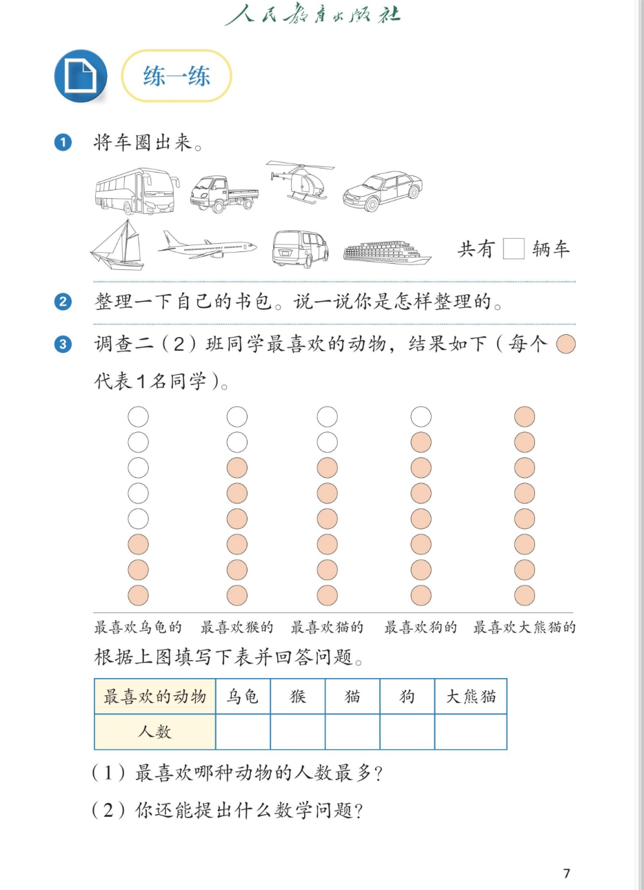

✏️ 分类与整理 · 课本第 7 页 · 练一练 1～3
人教版《数学》二年级上册 · 有声图文带读 · 先想后看解析
题数
6
认知
2
强化
3
拓展
1
本页重点
象形统计图读数
🎧 分两步学：
① 解析教材图片
——纯声音读图，读到哪一块哪一块闪动提示；关键处先倒计时让你思考，再在图片下方给出解析并朗读。
② 分层提问练习
——六道分层题（认知 / 强化 / 拓展），先思考再展开解析、朗读参考答案；这一步不再回到图片。
也可以随时点任意一句话、图上任意一块单独听；点课本文字卡还会展开答案。
教材图片（点块听读，读到哪块哪块闪）

📖 人教版《数学》二年级上册 · 课本第 7 页 · 图片仅供个人学习，版权归人民教育出版社所有
🤔 想一想（点我可跳过）
课本的文字（点句子：听读 + 看答案）
练一练①
① 将车圈出来。
看答案 ▾
参考答案：
圈出
4
辆车——
大客车、货车、小汽车、面包车
。
直升机、飞机在天上飞，帆船、轮船在水里走，都不是车，不圈。
练一练①填空
共有 □ 辆车。
看答案 ▾
答：共有 4 辆车。
数的时候一辆一辆地数，数一辆做一个记号，就不会漏数、重复数。
练一练②
② 整理一下自己的书包。说一说你是怎样整理的。
看答案 ▾
整理方法（多解，选一种说清楚）：
① 按
用途
分：书放一层，本子放一层，文具盒放一边；
② 按
科目
分：数学书和数学练习本放一起，语文书和语文练习本放一起；
③ 按
大小
分：大的书放下面，小的放上面。
💡 记住：一次整理只用同一个标准。
练一练③
③ 调查二（2）班同学最喜欢的动物，结果如下（每个 ● 代表 1 名同学）。
看答案 ▾
读图关键：
这是
象形统计图
——涂色的圆有几个，人数就是几。
数的时候
从下往上、一个一个数
，数一个做一个记号，不漏数、不重复数。
练一练③填表
根据上图填写下表并回答问题。
看答案 ▾
统计表（人数一行）：
乌龟
3
、猴
6
、猫
6
、狗
7
、大熊猫
8
。
自查
：3 + 6 + 6 + 7 + 8 = 30，全班一共 30 人。
练一练③(1)
(1) 最喜欢哪种动物的人数最多？
看答案 ▾
答：最喜欢大熊猫的人数最多
（8 人）。
看统计表比大小：8 > 7 > 6 = 6 > 3；也可以直接看象形图，涂色圆最多的一列就是人数最多的。
练一练③(2)
(2) 你还能提出什么数学问题？
看答案 ▾
参考问题（多解）：
① 最喜欢狗的比最喜欢乌龟的多几人？7 − 3 = 4（人）；
② 最喜欢猫和狗的一共有多少人？6 + 7 = 13（人）；
③ 最喜欢大熊猫的比最喜欢乌龟的多几人？8 − 3 = 5（人）。
💡 能用表中的数提出问题并正确解答，都算对。
分层提问练习（先想后看解析）
🚗
认知
图上哪些是车？共有几辆？
看解析
🤔 想一想
解析：
圈出 4 辆
：大客车、货车、小汽车、面包车
它们共同的特点
：在地上跑、载人载物的车
填空：共有
4
辆车
🚁
认知
直升机、帆船为什么不圈？
看解析
🤔 想一想
解析：
直升机、飞机——
在天上飞
，不是车
帆船、轮船——
在水里走
，不是车
道理
：先确定标准（在地上跑的车），再用标准去判断，一次只用一个标准
📋
强化
统计表怎么填？怎样检查没数漏？
看解析
🤔 想一想
解析：
人数一行
：乌龟 3、猴 6、猫 6、狗 7、大熊猫 8
数的方法
：从下往上一个个数涂色的圆，数一个做记号
💡 自查：3 + 6 + 6 + 7 + 8 = 30，与全班人数对上
🐼
强化
最喜欢哪种动物的人数最多？哪种最少？
看解析
🤔 想一想
解析：
最多
：大熊猫，8 人
最少
：乌龟，3 人
两种比法
：统计表里比数字；或直接看象形图比列的长短
⚖️
强化
最喜欢狗的比最喜欢乌龟的多几人？怎么算？
看解析
🤔 想一想
解析：
第一步
：查表——狗 7 人，乌龟 3 人
第二步
：7 − 3 = 4（人），
多 4 人
直观法
：象形图上对齐比一比，多出来的就是 4 个圆
🚀
拓展
根据统计表，你还能提出什么数学问题？
看解析
🤔 想一想
解析（开放题）：
问题一：
最喜欢猫和狗的一共有多少人？6 + 7 = 13（人）。
问题二：
最喜欢大熊猫的比最喜欢乌龟的多几人？8 − 3 = 5（人）。
问题三：
全班一共调查了多少人？3 + 6 + 6 + 7 + 8 = 30（人）。
🌈 用表中的数提出问题并正确解答，都算对
① 解析教材图片
② 分层提问练习
⏹ 停止
纯声音 + 高亮跟随 · 想好才出解析
← 返回导航